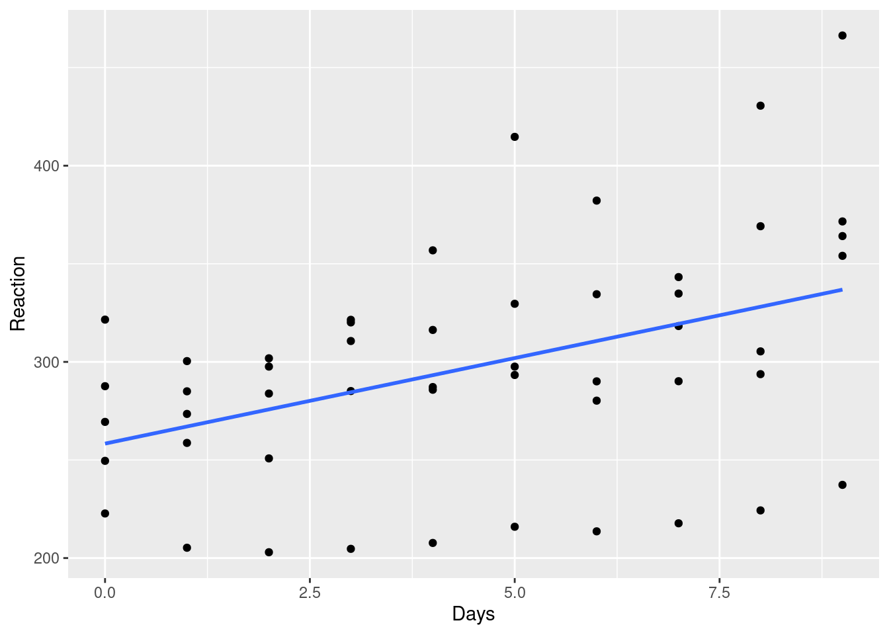
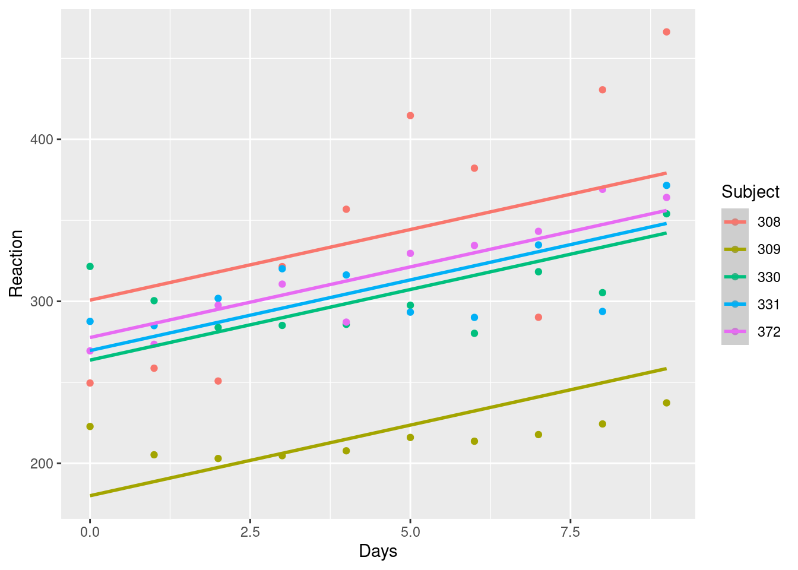
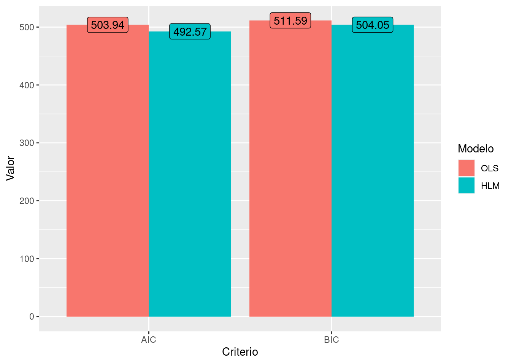
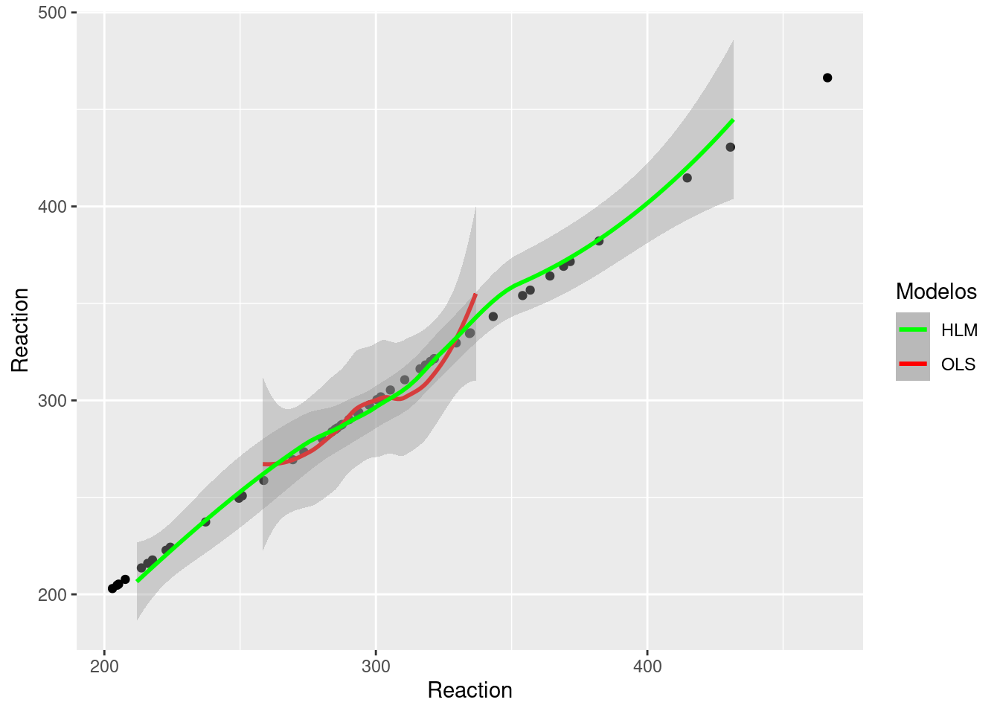
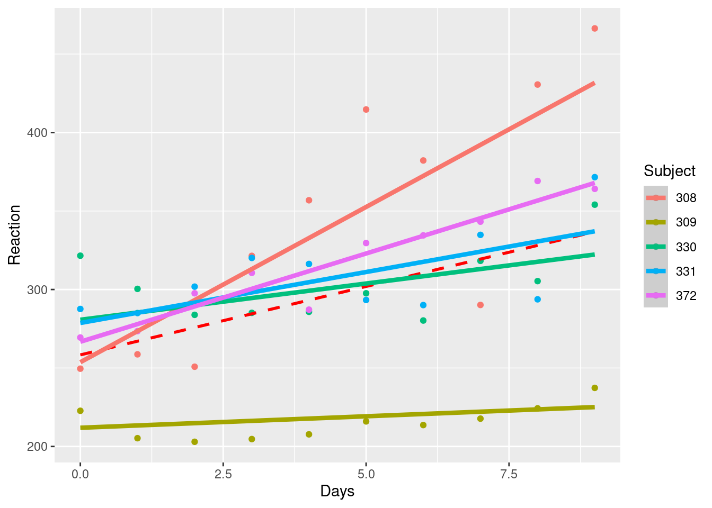

Mostrar código-fonte
library(tidyverse)
library(janitor)
library(lme4)library(tidyverse)
library(janitor)
library(lme4)A idéia dos modelos multi-níveis (Multi-level models), também chamados de hierárquicos (hiarchical models) ou ainda modelos mistos generalizados (Generalized Mixed Models) é conseguir capturar tanto efeitos fixos quanto efeitos randômicos das variáveis. Eles são particularmente úteis quando temos medidas repetidas da mesma variável (estudos longitudinais) quanto agrupamentos, diretos ou latentes em variáveis explicativas.
Diferente do que vimos no artigo sobre Regressão Linear, onde temos uma premissa de independência dos dados, os modelos hierárquicos permitem identificar a heterogeneidade individual e entre grupos que pertencem estes indivíduos. Para simplificar o entendimento, pense no seguinte cenário: Alunos agrupados por escolas: Cada aluno tem componentes que impactam seu desempenho, como renda, distância da escola, etc, porém podemos tem componentes específicos de cada escola que também podem impactar o resultado do indivídou, como experiência dos profressores, etc. Este tipo de relação jamais seria capturada em um modelo linear simples (OLS). Neste exemplo, o nível 1, seria o Aluno e o nível 2 seria a escola.
flowchart TD A[Escola A] --> B[Aluno_1] A[Escola A] --> C[Aluno_2] A[Escola A] --> D[Aluno_3] Z[Escola B] --> E[Aluno_4] Z[Escola B] --> F[Aluno_5] Z[Escola B] --> G[Aluno_6]
Veja que este conceito de nível ou grupo não necessariamente ocorre com agrupamentos observáveis, como no exemplo de escolas. Ele pode ocorrer de outras formas, dentre elas, quando não temos indipendência das observações, ou seja, quando a mesma unidade, possui diversas observações. Neste caso, consideramos a própria variável replicada, por exemplo, através do tempo, como uma forma de agrupamento ou nível. É este cenário que iremos utilizar a seguir.
Para os próximos exemplos iremos utilizar a base de dados sleepstudy que possui informações sobre um estudo sobre privação do sono de 18 indivídous.
# Selecionar base TitanicSurvival
df <- sleepstudy |> as_tibble()
dfA variável Reaction é o tempo médio de reação do indivíduo por dia (em milisegundos). O dias 0 e 1 são de adaptação de treino, dia 2 é o baseline e a privação do sono (apenas 3 horas de tempo na cama) inicia-se após o segundo dia.
Aqui, uma regressão simples, já teria uma de suas premissas feridas, pois não temos independência das observações, pois o mesmo indivíduo aparece em várias observações. Vamos dar uma olhada inicial no dataset.
glimpse(df)Rows: 180
Columns: 3
$ Reaction <dbl> 249.5600, 258.7047, 250.8006, 321.4398, 356.8519, 414.6901, 3…
$ Days <dbl> 0, 1, 2, 3, 4, 5, 6, 7, 8, 9, 0, 1, 2, 3, 4, 5, 6, 7, 8, 9, 0…
$ Subject <fct> 308, 308, 308, 308, 308, 308, 308, 308, 308, 308, 309, 309, 3…Vejamos os dados quando não levamos este elemento de agrupamento em consideração. Para facilitar o entendimento, vamos colocar no gráfico apenas 5 indivíduos.
df <- sleepstudy |> filter(Subject %in% c(308,309,330,331, 372))
df |>
ggplot(aes(x=Days, y=Reaction))+
geom_point()Olhando este gráfico, ele faz um sentido intuitivo, pois a medida que passam os dias, o tempo de reação aumenta (devido à privação do sono).
Se criamos um modelo de regressão simples, teríamos algo como:
mod_lm_simples <- lm(Reaction ~ Days, data = df)
df$fit_simples <- predict(mod_lm_simples)
df |>
ggplot(aes(x=Days, y=Reaction))+
geom_point() +
geom_smooth(aes(y=fit_simples))
Aqui temos um modelo que não considera o tempo de reação de cada indivíduo, que pode ser diferente já desde o início.
Veja que, se simplesmente agruparmos as observações por indivíduos, podemos observar que o indivídous tem um tempo de reação maior com o passar dos dias, porém alguns tem tempos de reação distintos já desde o início, ou seja, o intercepto de cada um dos grupos já seria diferente desde o início do teste.
mod_lm_simples <- lm(Reaction ~ Days, data = df)
df$fit_simples <- predict(mod_lm_simples)
df |>
ggplot(aes(x=Days, y=Reaction, color=Subject))+
geom_point() +
geom_smooth(aes(y=fit_simples))Recordemos que, em um modelo linear simples, temos:
Reaction_i = \beta0 + \beta1 * Days_i + e
Portanto, utilizando a função summary(), vemos que, teríamos:
\widehat{Reaction_i} = 258.34 + 8.72 * Days_i
summary(mod_lm_simples)
Call:
lm(formula = Reaction ~ Days, data = df)
Residuals:
Min 1Q Median 3Q Max
-103.805 -28.170 7.242 27.575 129.533
Coefficients:
Estimate Std. Error t value Pr(>|t|)
(Intercept) 258.343 14.372 17.976 < 2e-16 ***
Days 8.720 2.692 3.239 0.00218 **
---
Signif. codes: 0 '***' 0.001 '**' 0.01 '*' 0.05 '.' 0.1 ' ' 1
Residual standard error: 54.68 on 48 degrees of freedom
Multiple R-squared: 0.1794, Adjusted R-squared: 0.1623
F-statistic: 10.49 on 1 and 48 DF, p-value: 0.002179Vemos claramente que tanto o intercepto do modelo linear simples, quando sua inclinação seriam diferentes, se considerados o efeito do grupo, ou seja, neste caso de cada indivíduo, para nossa modelagem.
É aqui que entram os modelos multi-níveis (ou hierárquico, ou de efeitos, mistos….esses são nomes diferentes para a mesma técnica).
Além de termos i indivíduos, teremos j grupos, permitindo que o fator do grupo, seja considerado na estimativa da variável dependente (Reaction). Veja:
\widehat{Reaction_{ij}} = \beta0_j + \beta1_j * Days_{ij}
Do modelo simples, temos que \beta0 é o intercepto, portanto, \beta0_j é o intercepto para aquele determinado grupo. Ou seja, teremos um intercepto para cada grupo definido. Aqui, podemos definir uma equação par \beta0j:
\beta0_j = \gamma_{00} + u_{0j}
Aqui, \gamma_{00} é o grande intercepto, ou melhor, o intercepto médio entre todos os grupos. É o intercepto fixo. Significa que para cada indivíduo que estamos estimando, ele será considerado.
u_{0j} é o desvio do grupo j do intercepto fixo, ou seja, do \gamma_{00}.
Agora podemos também definir uma equação para a inclinação:
\beta1_j = \gamma_{10} + u_{1j}
Aqui, é similar ao que vimos para o intercepto, porém \gamma_{10}, é a inclinação da primeira variável explicativa, ou seja, a inclinação fixa, enquanto u_{1j} é a parte aleatória da inclinação para determinado grupo.
Portanto temos as seguintes equações:
Nível 1:
\widehat{Reaction_{ij}} = \beta0_j + \beta1_j * Days_{ij}
Nível 2:
\beta0_j = \gamma_{00} + u_{0j}
\beta1_j = \gamma_{10} + u_{1j}
Substituindo temos:
\widehat{Reaction_{ij}} = (\gamma_{00} + u_{0j}) + ((\gamma_{10} + u_{1j}) * Days_{ij})
Neste caso, temos um modelo de dois níveis, e por isso, é também chamado HLM2.
Vejamos com seria um modelo hierárquico tendo a variável “Subject” como nível 2 e apenas permitindo o efeito do grupo na variável de saída. Para isso usamos a função lmer do pacote (lme4). Esta função utiliza a sintaxe similar à função de regressão simples (lm) para a parte fixa do modelo, porém permite incluir entre parênteses a parte aleatória do modelo.
mod_mm_0 <- lmer(Reaction ~ Days + (+1 | Subject), data = df)
df$fit_mm_0 <- predict(mod_mm_0)
df |>
ggplot(aes(x=Days, y=Reaction, color=Subject))+
geom_point() +
geom_smooth(aes(y=fit_mm_0))
No exemplo acima, criamos um modelo onde a parte fixa possui o intercepto e a variável preditora (Days), porém na parte aleatória, temos apenas a parte aleatória do intercepto e não da variável preditora. Neste caso, nossa equação seria:
\widehat{Reaction_{ij}} = (\gamma_{00} + u_{0j}) + (\gamma_{10} * Days_{ij})
Observamos que apenas permitindo o efeito do grupo variar no intercepto, já visualizamos o impacto potencial. Vejamos um resumo do modelo:
jtools::summ(mod_mm_0)| Observations | 50 |
| Dependent variable | Reaction |
| Type | Mixed effects linear regression |
| AIC | 503.94 |
| BIC | 511.59 |
| Pseudo-R² (fixed effects) | 0.16 |
| Pseudo-R² (total) | 0.72 |
| Est. | S.E. | t val. | d.f. | p | |
|---|---|---|---|---|---|
| (Intercept) | 258.34 | 22.88 | 11.29 | 5.00 | 0.00 |
| Days | 8.72 | 1.66 | 5.25 | 44.00 | 0.00 |
| p values calculated using Satterthwaite d.f. |
| Group | Parameter | Std. Dev. |
|---|---|---|
| Subject | (Intercept) | 47.16 |
| Residual | 33.70 |
| Group | # groups | ICC |
|---|---|---|
| Subject | 5 | 0.66 |
Podemos observar no resumo acima que temos a sessão de efeitos Fixos e Aleatórios (Randômicos). O p-value da variável Days se mostra estatisticamente significante (à 95%) no efeito fixo (como no modelo lm simples), porém observamos o efeito randômico do grupo no intercépto.
O ICC (Inteclass Correlation Coefficient) pode ser interpretado com a proporção de variância explicada pela estrutura de grupo. Neste exemplo (2224/(2224+1136)), vemos que 66% da variância já pode ser explicada permitindo o efeito de grupo em nosso modelo.
summary (mod_mm_0)Linear mixed model fit by REML ['lmerMod']
Formula: Reaction ~ Days + (+1 | Subject)
Data: df
REML criterion at convergence: 495.9
Scaled residuals:
Min 1Q Median 3Q Max
-2.12491 -0.58143 0.07722 0.47775 2.58557
Random effects:
Groups Name Variance Std.Dev.
Subject (Intercept) 2224 47.16
Residual 1136 33.70
Number of obs: 50, groups: Subject, 5
Fixed effects:
Estimate Std. Error t value
(Intercept) 258.34 22.88 11.293
Days 8.72 1.66 5.254
Correlation of Fixed Effects:
(Intr)
Days -0.326Podemos também permitr o efeito aleatório do grupo na variável Days tanto no intercepto quanto na inclinação:
mod_mm_1 <- lmer(Reaction ~ Days + (Days | Subject), data = df)
df$fit_mm_1 <- predict(mod_mm_1)
df |>
ggplot(aes(x=Days, y=Reaction, color=Subject))+
geom_point() +
geom_smooth(aes(y=fit_mm_1))Aqui, podemos observar que o grupo (neste caso indivíduo), tem impacto tanto no componente fixo quanto no componente aleatório.
No exemplo acima, criamos um modelo onde a parte fixa possui o intercepto e a variável preditora (Days), porém na parte aleatória, temos apenas a parte aleatória do intercepto e também da variável preditora. Neste caso, nossa equação seria:
\widehat{Reaction_{ij}} = (\gamma_{00} + u_{0j}) + ((\gamma_{10} + u_{1j}) * Days_{ij})
Se comporarmos os modelos, observamos o segundo modelo, é estatisticamente melhor que o primeiro (à 95% de confiança) que o primeiro utilzando o Likelihood Ratio Test.
lmtest::lrtest(mod_mm_0, mod_mm_1)Os critérios AIC e BIC também são melhores para o segundo modelo:
rbind(map_df(list(mod_1=mod_mm_0, mod_2=mod_mm_1), AIC),
map_df(list(mod_1=mod_mm_0, mod_2=mod_mm_1), BIC)) |>
cbind(Criteria=c("AIC", "BIC")) |> pivot_longer(cols = starts_with("mod")) |>
ggplot(aes(x=Criteria, y=value, fill=name))+
geom_col(position="dodge")+
labs(y="Valor", x="Criterio")+
geom_label(aes(label=round(value,2)), position = position_dodge(width = .9), show.legend = F)+
scale_fill_discrete(name = "Modelo", label=c("OLS", "HLM"))
É importante observar que não há procedimento stepwise para modelo multi-nível, desta forma deve-se fazer manualmente o procedimento step-up, que seria a adição e comparação dos modelos e significância das variáveis começando do modelo nulo até um mais completo.
Vamos agora fazer predições para nossa base e comparar os modelos. Utilizamos a função predict(), passando o modelo hierárquico como argumento, da mesma forma que fazíamos na regressão simples.
Por exemplo:
df_pred <- data.frame(Reaction = seq(from = 293.1, to=298.5, by=0.5),
Days = seq(from = 0, to = 10),
Subject = rep(330,11))
predict(mod_mm_1, newdata = df_pred) 1 2 3 4 5 6 7 8
280.7099 285.3295 289.9490 294.5686 299.1882 303.8077 308.4273 313.0468
9 10 11
317.6664 322.2859 326.9055 Podemos também comparar o fit dos modelos OLS e HML:
df$fit_mm_1 <- predict(mod_mm_1, type = "response")
df |> ggplot(aes(x=Reaction, y=Reaction)) +
geom_point() +
geom_smooth(aes(x=fit_simples, color="red")) +
geom_smooth(aes(x=fit_mm_1, color="green"))+
scale_color_manual(name = "Modelos",
labels = c("HLM", "OLS"),
values = c("green", "red"))
df |> ggplot(aes(x=Days, y=Reaction, color = Subject)) +
geom_point() +
geom_smooth(aes(y=fit_simples), color = "red", linetype = "dashed") +
geom_smooth(aes(y=fit_mm_1), size = 1.5)
Podemos observar que a linha tracejada do modelo OLS, não considera os efeitos fixos e aleatórios dos grupos de indivíduos, enquanto o modelo HML consegue capturar melhor a variância dos dados considerando este outro nível.
De forma similar ao que fizemos no modelo com 2 níveis hierárquicos, é possivel empilhar outros níveis para capturar os efeitos destes níveis também. Isto pode ser feito, utilzando a sintaxe:
modelo_hlm3_nulo <- lmer(y ~ 1 + (1|Nível 3) + (1|Nível 3:Nível 2))
modelo_hlm3_intercepto_inclinacoes <- lmer(y ~ x + (x|Nível 3) + (x|Nível 3:Nível 2))
Além dos modelos hierárquicos lineares, podemos ter modelos hierárquicos generalizados, ou seja, para variáveis de resposta que sigam distribuições como Bernoulli, Poisson, Binomial Negativa, etc, de forma similar ao que discutimos na Regressão Logística, porém adicionando o agrupamento e componentes fixos e aleatórios na fórmula.
Para isto, deve-se utilzar a função glmer() do pacote lme4.
Para modelos multinomiais, uma alterativa é utilizar a função mclogit() do pacote mclogit. Por hora, ficamos por aqui.
Para uma referência extra sobre este tema, sugerimos: R Guide to Longitudinal Models